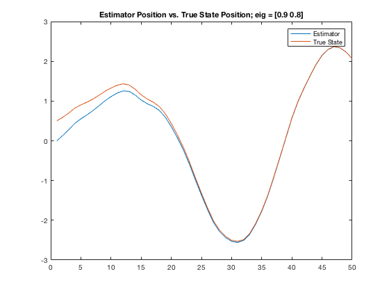
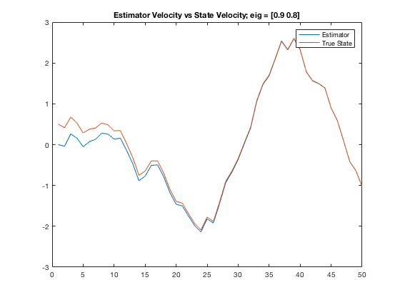
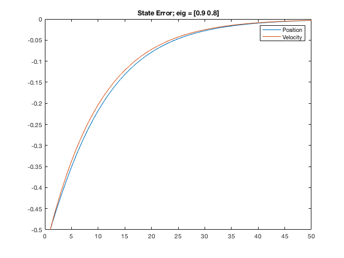
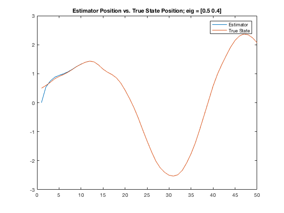
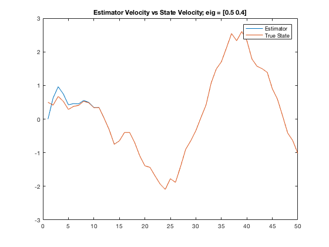
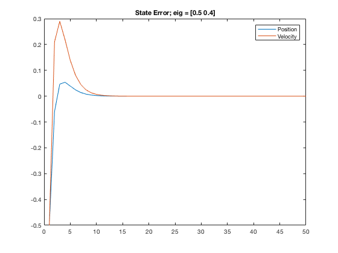
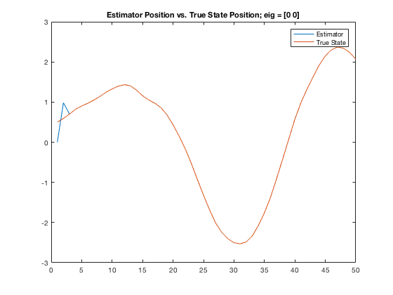
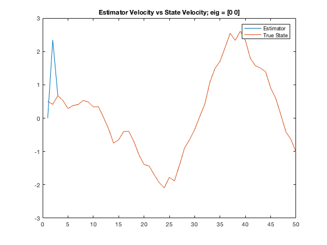
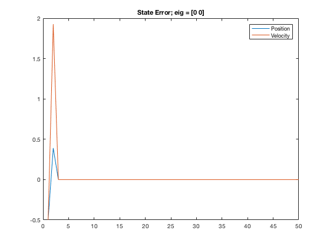

Contents
clear
Part 1
n = 50; A_c = [0 1; -1 0]; B_c = [0;1]; C = [1 0]; D = 0; dt=0.2; mat_ss = ss(A_c,B_c,C,D); sys_dsct = c2d(mat_ss,dt); A_d = sys_dsct.A; B_d = sys_dsct.B; C_d = sys_dsct.C; D_d = sys_dsct.D;
Part 2-3
inp = randn(1,n); x_0 = [0.5 0.5]; [Y,X] = dlsim(A_d,B_d,C_d,D_d,inp,x_0);
Part 4
[U,S,V] = svd(A_d); % The singular values are at 1 with multiplicitiy 2 G = place(A_d',C_d',[0.9 0.8])'; A_bar = A_d - G*C; eig(A_bar); % Eigenvalues of A_bar are 0.8 and 0.9. Place places the eigenvalues of A-BK % for a given A,B,eig
Part 5
x_obs_i = [0;0]; x_state = zeros(2,n); y_obs = zeros(1,n); x_state(:,1) = x_obs_i; for i = 2:n x_state(:,i) = A_bar*x_state(:,i-1) + G*Y(i-1) + B_d*inp(:,i-1); y_obs(i-1) = C*x_state(:,i-1); end clf plot(x_state(1,:)); X = X'; hold on; plot(X(1,:)); title('Estimator Position vs. True State Position; eig = [0.9 0.8]'); legend('Estimator','True State'); figure clf plot(x_state(2,:)) hold on; plot(X(2,:)) title('Estimator Velocity vs State Velocity; eig = [0.9 0.8]'); legend('Estimator','True State'); figure clf plot((x_state - X)') title('State Error; eig = [0.9 0.8]'); legend('Position','Velocity');  
Part 6
G = place(A_d',C_d',[0.5 0.4])' A_bar = A_d - G*C; x_obs_i = [0;0]; x_state = zeros(2,n); y_obs = zeros(1,n); x_state(:,1) = x_obs_i; for i = 2:n x_state(:,i) = A_bar*x_state(:,i-1) + G*Y(i-1) + B_d*inp(:,i-1); y_obs(i-1) = C*x_state(:,i-1); end figure plot(x_state(1,:)); hold on; plot(X(1,:)); title('Estimator Position vs. True State Position; eig = [0.5 0.4]'); legend('Estimator','True State'); figure clf plot(x_state(2,:)) hold on; plot(X(2,:)) title('Estimator Velocity vs State Velocity; eig = [0.5 0.4]'); legend('Estimator','True State'); figure plot((x_state - X)') title('State Error; eig = [0.5 0.4]'); legend('Position','Velocity'); % The observer converges more quickly when the eigenvalues are smaller.
G =
1.0601
1.2030
   Part 7
I believe the observer converges the fastest when the eigenvalues are placed at 0
G = acker(A_d',C_d',[0 0])' A_bar = A_d - G*C; x_obs_i = [0;0]; x_state = zeros(2,n); y_obs = zeros(1,n); x_state(:,1) = x_obs_i; for i = 2:n x_state(:,i) = A_bar*x_state(:,i-1) + G*Y(i-1) + B_d*inp(:,i-1); y_obs(i-1) = C*x_state(:,i-1); end figure plot(x_state(1,:)); hold on; plot(X(1,:)); title('Estimator Position vs. True State Position; eig = [0 0]'); legend('Estimator','True State'); figure clf plot(x_state(2,:)) hold on; plot(X(2,:)) title('Estimator Velocity vs State Velocity; eig = [0 0]'); legend('Estimator','True State'); figure plot((x_state - X)') title('State Error; eig = [0 0]'); legend('Position','Velocity'); % The deadbeat observer converges after 2 steps characteristically.
G =
1.9601
4.6362
   Part 8
The state estimation by an observer essentially takes in the position data and moves the state accordingly. The error of position is then used as a backwards solution to find the velocity. Essentially, it takes the velocity data that was already in the state, and adjusts it based on the distance that the state would have moved given that velocity. In this way, the observer integrates velocity to find position, then uses the error of position to reconfigure the velocity until the error reaches 0.
% observer